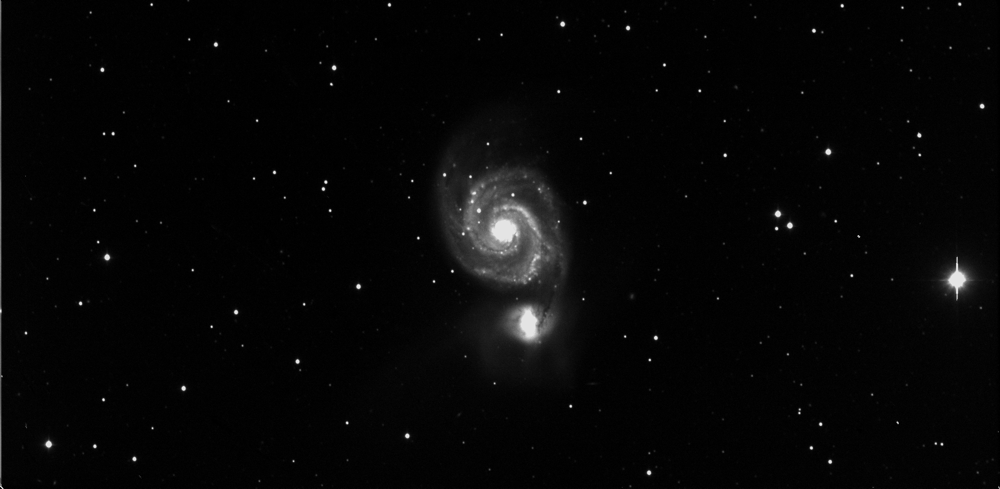
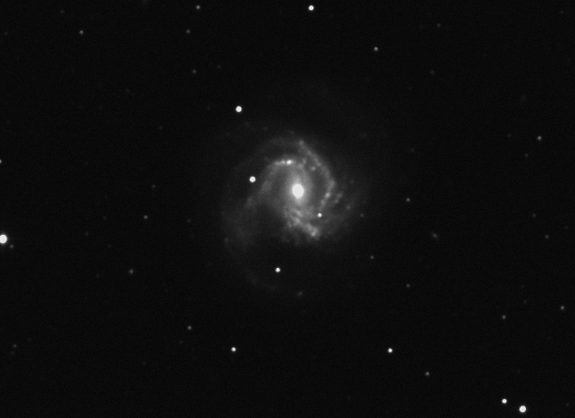
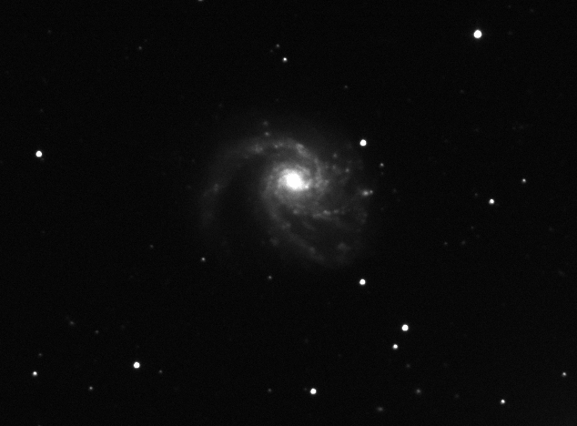
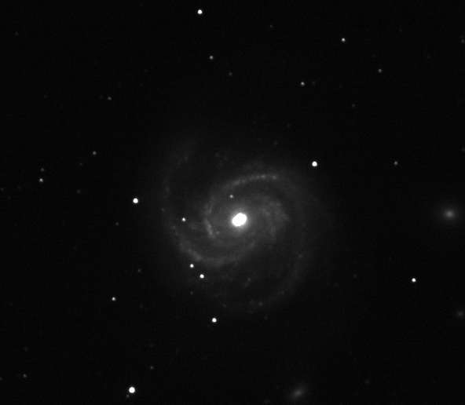
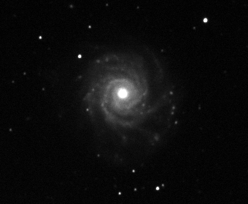

Data Reduction
All data reduction was done in IRAF and Python- Bias images were comined
- Bias was subtracted from all images including flats
- 10 flats were taken for each filter
- Flats were combined
- All galaxy images were flatfielded using the appropriate sections of the flats
- Images of the same galaxy in the same filters were aligned and corrected for bad pixels and combined using imshalign
- Resultant Images (B filter shown only):

M51

M61

M99

M100
NGC3344

NGC3938